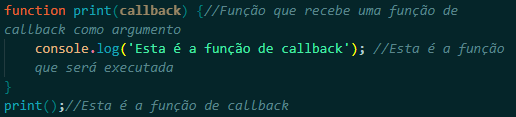
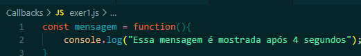
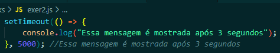
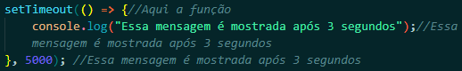

CallBacks são funções que são passadas como argumentos para outras funções. Quando a função que recebe a função de callBack é executada, a função de callBack é executada também.
Então, nós podemos também passar funções como parâmetros para outras funções. Isso é muito útil quando queremos que uma função seja executada após a execução de outra função.

O JavaScript executa o código sequencialmente em ordem de cima para baixo. Mas, às vezes, nós precisamos executar um código após a execução de outro código. Nós podemos fazer isso com funções de callBack. Callbacks garantem que uma função não seja executada antes de outra função ser executada. Elas nos ajudam a desenvolver código JavaScript assíncrono e evitam que tenhamos problemas com a ordem de execução do código.
Para entender o que expliquei acima, deixe-me começar com um exemplo simples. Nós queremos registrar uma mensagem no console mas ela deve aparecer lá após 4 segundos. Nós podemos fazer isso com a função setTimeout() do JavaScript.

Existe um método em JavaScript chamado setTimeout que é usado para executar uma função após um determinado período de tempo em (em milessimos de segundo). Então o código acima irá mostrar a mensagem após 4 segundos.
Uma função anônima é uma função que não tem um nome. Ela é declarada sem um nome e é usada como um valor. Funções anônimas são passadas como argumentos para outras funções. Elas são muito úteis quando queremos passar uma função como argumento para outra função. Como alternativa, podemos definir uma função diretamente como um argumento para outra função, ao invés de chamá-la primeiro e depois passá-la como argumento. Isso é chamado de função anônima.

No exemplo acima, nós passamos uma função anônima como argumento para a função setTimeout(). A função anônima é executada após 4 segundos. Como podemos ver, a função de callback aqui não tem nome e uma função sem nome em JavaScript é chamada de função anônima. Isso faz exatamente a mesma tarefa que a função de callback anterior.
Nós podemos usar arrow functions como funções de callback também. Arrow functions são uma forma mais curta de escrever funções em JavaScript. Elas são muito úteis quando queremos escrever funções de callback curtas e simples.
